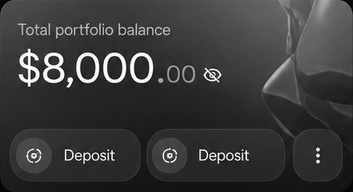
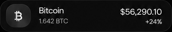

Sheet04 grayscale hero; Sheet03 row

Annotated 80px row target

Inter — regular display / medium row
Total portfolio balance
$8,000.00
Assets
₿
Bitcoin1.642 BTC
$56,290.10+24%
a g 1 4 $ % 1W
Manrope — regular display / medium row
Total portfolio balance
$8,000.00
Assets
₿
Bitcoin1.642 BTC
$56,290.10+24%
a g 1 4 $ % 1W